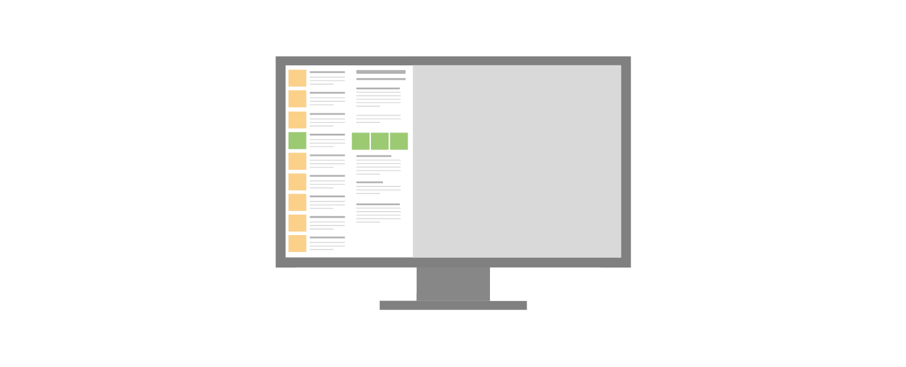
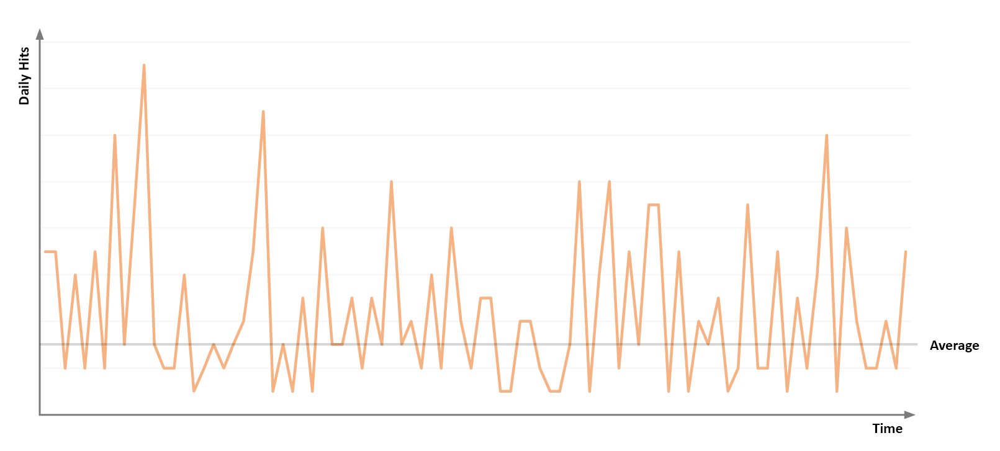
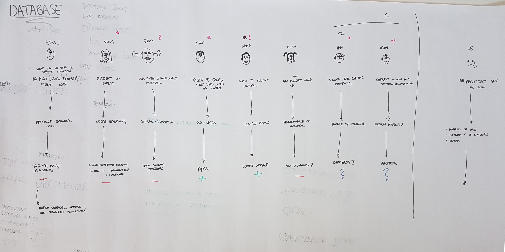
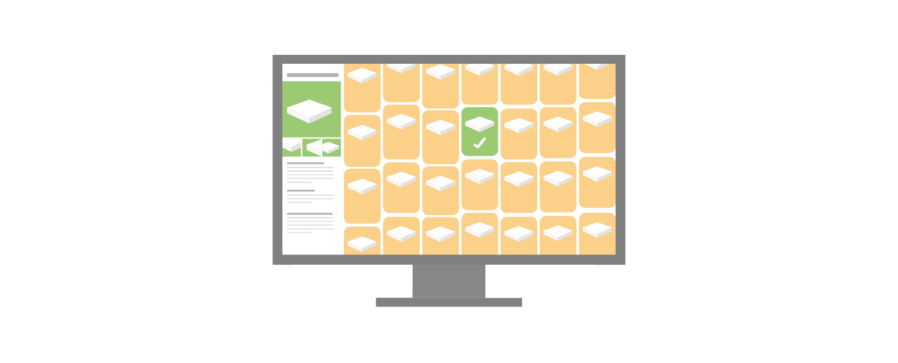

Materials Database
Some information has been omitted from this case study due to confidentiality. The views and information shown are based of my own opinions and findings, which are not necessarily representative of Foster+Partners
Introduction
The Material Research Centre (MRC) had been developing a database in order to hold a record of all the material samples available in the library, and make it accessible practice wide.
When this database went live, usership was quite low, and so I was tasked with redesiging a system that worked better.
My Role: Researcher and Designer
The Problem
The original design brief of the database had not been clearly laid out previously, and as such over time began to morph and grow: users would request features, and the programmer would write them in, without any guidance or intervention from a designer. This led to a system that attempted to do too much, but also failed to function at its core goal of aiding the team in managing the library, and allowing other members of the practice to effectively search for materials.

From user feedback and review, some of the issues included:
●Location focused interface, with a map taking up over 70% of a screen
●Small images of materials
●Problematic search, due to data structure behind the front end
●Unnecessary information, and poor information hierarchy, resulting in a "busy" page
These issues became clear in usership, which had just under 3 hits per working day on average:

Research
With a number of issues with the application, I chose to go right to the start and actually clearly define the tool:
Who is it for, and why is it needed?
The Intention
When speaking about the database to the MRC team, it became clear that the main desire of the tool was to allow architects to access a digital library of material information,
with the intention to alleviate the work load of the team from questions on materials that were requested and enable access to the wealth of information to F+P offices around the world.
However when asked specifically about what work it should assist with, the answers became subjective and qualatitive. The view of how the database should be handling workflows was quite different to the reality.
I ran a workshop, creating user journeys for members of the office with typical questions that the team would be asked. This could then formulate categories for the types of work the team deals with:

From these 8 categories, I created a work tracking system, so that the team would log the type of queries they would recieve (amongst other information) so that we could clearly see
a spread of what they were being asked:
Which could then be cross-referenced with the functionality of the existing tool, to see how much it was actually helping, and how much it could help.
The Data
One of the main comments from external users was they "could not find what (they) were looking for". Whilst this was typically attributed to the technological limitations of the database,
the team was overlooking a crucial fact: that only a small % of the samples in the library were captured digitally.
This would have huge impacts on usership, after all, no one would use a maps service if only a fraction of the map data was there:
With an incomplete dataset, it became irrelevant as to how well you present or access the information, the focus of the tool should be on effectively capturing the information in the library.
This became apparent when discussed with the team, as the database was the primary method of managing the library.
However due to the lack of clear direction from the start, it had become inundated with
information that not only slowed down the process of documenting samples, but in a lot of cases weren't even relevant to employees outside of the team. A number of these features were added in based on
beliefs of what would be useful, rather than engaging the users (in this case the architects) to understand what they needed from the tool.
The core issue was though, that there simply wasn't enough information captured in for it to be a useful database, and so the focus switched to how this could be streamlined.
A user flow was documented for the process of actually databasing a sample:
When actually written down, it was clear that a 50+ step process to document a sample was far too long, especially with a library in excess of 20,000 materials. It also brought up the issue of
overall process management, how are the samples handled throughout their life at the company, when they're received by the team, if an employee needs to borrow them etc. These processes and stages were
also identified, and required the flows for the samples management:
Design
With bigger questions being asked about the process, exercises were undertaken to see how the journey of a sample could be improved. However there were still issues with the front end, and these too had to be addressed.
The original design removed a lot of the focus from the actual materials, which didn't make sense for a materials database. Architects worked in very visual manners, relying on renderings, diagrams, images and photos to commuincate their design intention. As such, it made sense that the database should have much more focus on the actual visuals of the material: 
A prototype version was created, with a small subset of materials to allow users to trial. The visuals were kept quite clean, with colour only being used to highlight
continuous themes e.g. Materials or Companies, in order to have a "clean" palette to bring attention more to the materials. A better information hierachy was created,
creating consistency between headings, and information, so that the salient information was clearly presented.

Evaluation
At the current stage, the interface is undergoing continued work, but importantly the user processes that surround the whole system are being evaluated, to then design in features that best compliment, and shorten the workflow of inputting samples